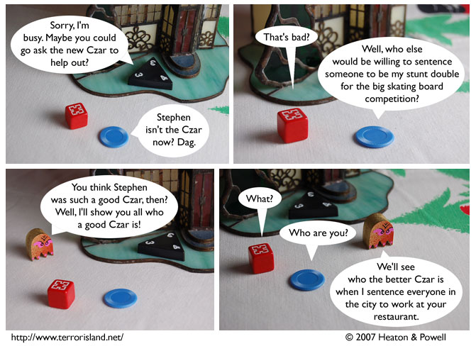

Strip #240
— Monday, December 24, 2007
Jame will probably have to revise his employee discount policy, if he wants to stay in business.
Notes, Thoughts, &c.
Ben’s Notes
New webcomics site you might want to check out: Family Webcomics, from the people who brought you Bitmap World (and some neat Terror Island emoticons). If you’re looking for family-friendly webcomics, this should be a good place to do it.
Lewis’s Notes
We haven’t decided if Blueteen can teleport or if he is multilocated in various parts of the city. It is also possible he just travels very quickly. We have ruled out the possibility that he can holographically project an image of himself and then throw his voice to it. I suppose we might revisit that decision though, at a later time.